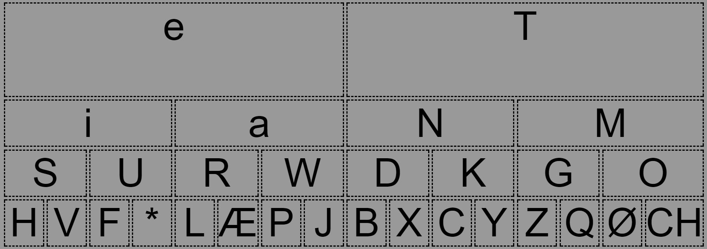
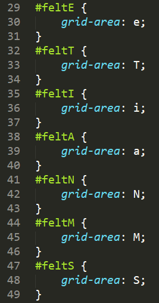

Grids
Grid har for os været det første skridt imod at kunne lave responsive hjemmesider, grids er det nyeste indenfor css, og bliver omtalt som noget af det mest revolutionerende siden der blev lavet responsive hjemmesider. Før i tiden var det rigtig svært at placere elementerne på siden i CSS, men grids gør det hele meget nemmere. Float og clear har haft succes, men været meget trial and error, det har altså ikke fungeret så solidt som grids gør. Grids bygger grundlæggende på flexbox, men i modsætning til det, som tager udgangspunkt i at indholdet bestemmer meget (og egentligt helst skal have samme størrelse, for ikke at skabe problemer), så er grids mere medgørligt, da det tager udgangspunkt i layout. Før var der altså fokus på bredder på elementerne og nu regner grids selv bredden ud.
I en af øvelserne vi havde med grids skulle vi sætte en morsenøgle. Jeg har brugt den som eksempel, da jeg virkelig synes at den viser hvor godt grids fungerer, og hvordan tilgangen til det er.

Her er mit færdige produkt med morsenøglen, og nedenunder ser man hvordan jeg har opbygget det i css.
